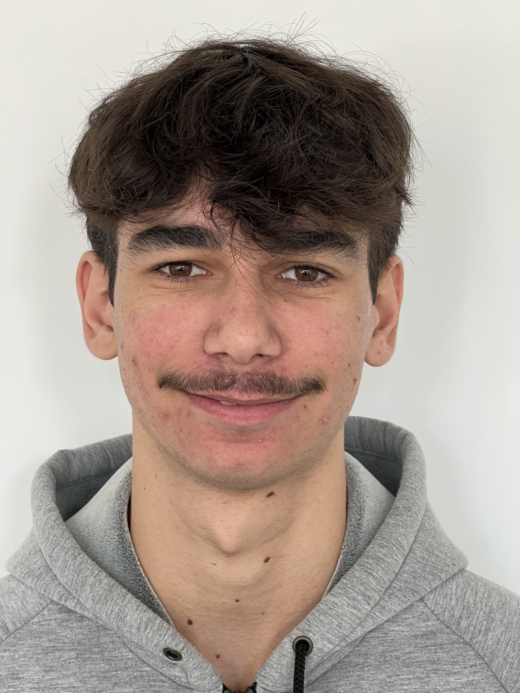

BOTTÉ-MAGALHAES Jules
Âge : 18ans
Adresse : 33850 Léognan, France
Langue : Anglais B1, Espagnol B1
Permis : B + Véhicule
Compétences :
- Maitrise pack Office
- Maitrise en Informatique (certification PIX, langage C, HTML, CSS)
- Maitrise logiciel informatique pour le bâtiment (Revit, Solidworks, DIALux)
- Maitrise sur Photoshop, et Sony Vegas Pro
CENTRES D'INTÉRÊT
- Voyage
- Culture (Cinéma, Musée...)
- Musique